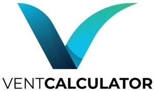

Trade Mark Journal No.2025/010 7 March 2025
WO0000001840013 (6,11,35)
Office of origin: Turkey
Date of International Registration:8 August 2024
Date of designation in the UK:
8 August 2024

The mark contains the colours blue and black.
International priority date claimed: 28 May 2024
(Turkey)
- Class 6
- Cable joints of metal, non-electric / cable linkages of metal, non-electric; cables of metal, non-electric; collars of metal for fastening pipes; closures of metal for containers; clips of metal for cables and pipes; drain pipes of metal; drain traps [valves] of metal; ducts of metal for ventilating and airconditioning installations; ducts of metal, for central heating installations / ducts and pipes of metal for central heating installations / pipes of metal, for central heating installations; elbows of metal for pipes; ferrules of metal; fittings of metal for compressed air lines; fittings of metal for building; junctions of metal for pipes; labels of metal; locks of metal for bags; locks of metal for vehicles; packaging containers of metal; pipe muffs of metal; pipes of metal / tubes of metal; plugs of metal / bungs of metal; reinforcing materials of metal for pipes; sleeves [metal hardware]; valves of metal, other than parts of machines; wall plugs of metal.
- Class 11
- Heating installations using solid, liquid or gas fuels or electricity: central heating boilers, boilers for heating installations, radiators [heating], heat exchangers, not parts of machines, stoves, kitchen stoves, solar thermal collectors [heating]; steam generating apparatus; fog machines; adsorption apparatus for generating nitrogen; adsorption apparatus for generating oxygen, steam boilers, other than parts of machines, acetylene generators; installations for air-conditioning and ventilating; lighting installations; lights for vehicles and interior-exterior spaces; pasteurizers and sterilizers; cooling installations and freezers; filters for aquariums and aquarium filtration apparatus; electric bed warmers and electric blankets, not for medical use; electric pillow warmers; electric or non-electric footwarmers; hot water bottles; socks, electrically heated; water softening apparatus; water purification apparatus; water purification installations; waste water purification installations; sanitary installations: taps [faucets], shower installations, toilets [water-closets], shower and bathing cubicles, bath tubs, toilet seats, sinks, wash-hand basins [parts of sanitary installations], washers for water taps; electric and gas-powered devices, installations and apparatus for cooking, drying and boiling: cookers, electric cooking pots, electric water heaters, barbecues, electric laundry driers; hair driers; hand drying apparatus; industrial type installations for cooking, drying and cooling purposes; ventilation [air-conditioning] installations and apparatus; ventilation apparatus.
- Class 35
- The bringing together, for the benefit of others, of a variety of goods, namely, cable joints of metal, non-electric / cable linkages of metal, nonelectric, cables of metal, non-electric, collars of metal for fastening pipes, closures of metal for containers, clips of metal for cables and pipes, drain pipes of metal, drain traps [valves] of metal, ducts of metal for ventilating and air-conditioning installations, ducts of metal, for central heating installations / ducts and pipes of metal for central heating installations / pipes of metal, for central heating installations, elbows of metal for pipes, ferrules of metal, fittings of metal for compressed air lines, fittings of metal for building, junctions of metal for pipes, labels of metal, locks of metal for bags, locks of metal for vehicles, packaging containers of metal, pipe muffs of metal, pipes of metal / tubes of metal, plugs of metal / bungs of metal, reinforcing materials of metal for pipes, sleeves [metal hardware], valves of metal, other than parts of machines, wall plugs of metal, heating installations using solid, liquid or gas fuels or electricity: central heating boilers, boilers for heating installations, radiators [heating], heat exchangers, not parts of machines, stoves, kitchen stoves, solar thermal collectors [heating], steam generating apparatus, fog machines, adsorption apparatus for generating nitrogen, adsorption apparatus for generating oxygen, steam boilers, other than parts of machines, acetylene generators, installations for air-conditioning and ventilating, lighting installations, lights for vehicles and interior-exterior spaces, pasteurizers and sterilizers, cooling installations and freezers, filters for aquariums and aquarium filtration apparatus, electric bed warmers and electric blankets, not for medical use, electric pillow warmers, electric or non-electric footwarmers, hot water bottles, socks, electrically heated, water softening apparatus, water purification apparatus, water purification installations, waste water purification installations, sanitary installations: taps [faucets], shower installations, toilets [water-closets], shower and bathing cubicles, bath tubs, toilet seats, sinks, wash-hand basins [parts of sanitary installations], washers for water taps, electric and gas-powered devices, installations and apparatus for cooking, drying and boiling: cookers, electric cooking pots, electric water heaters, barbecues, electric laundry driers, hair driers, hand drying apparatus, industrial type installations for cooking, drying and cooling purposes, ventilation [air-conditioning] installations and apparatus, ventilation apparatus, enabling customers to conveniently view and purchase those goods, such services may be provided by retail stores, wholesale outlets, by means of electronic media or through mail order catalogues.
BİMED TEKNİK ALETLER SANAYİ VE TİCARET ANONİM ŞİRKETİ
Representative: DESTEK PATENT ANONİM ŞİRKETİ, Odunluk Mahallesi, Akademi Caddesi,, Zeno İş Merkezi, D Blok, Kat: 4, TR-16110 Nilüfer, Bursa, TURKEY